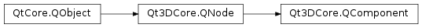

Qt3DCore.QComponent¶
Inherited by: Qt3DRender.QObjectPicker, Qt3DInput.QAxisAccumulator, Qt3DRender.QShaderData, Qt3DRender.QGeometryRenderer, Qt3DExtras.QCylinderMesh, Qt3DExtras.QPlaneMesh, Qt3DExtras.QSphereMesh, Qt3DExtras.QExtrudedTextMesh, Qt3DExtras.QTorusMesh, Qt3DRender.QMesh, Qt3DExtras.QConeMesh, Qt3DExtras.QCuboidMesh, Qt3DLogic.QFrameAction, Qt3DRender.QLayer, Qt3DRender.QAbstractLight, Qt3DRender.QSpotLight, Qt3DRender.QDirectionalLight, Qt3DRender.QPointLight, Qt3DRender.QLevelOfDetail, Qt3DRender.QLevelOfDetailSwitch, Qt3DRender.QRenderSettings, Qt3DRender.QAbstractRayCaster, Qt3DRender.QScreenRayCaster, Qt3DRender.QRayCaster, Qt3DInput.QMouseHandler, Qt3DCore.QTransform, Qt3DRender.QRenderTarget, Qt3DRender.QEnvironmentLight, Qt3DRender.QSceneLoader, Qt3DRender.QComputeCommand, Qt3DAnimation.QAbstractClipAnimator, Qt3DAnimation.QBlendedClipAnimator, Qt3DAnimation.QClipAnimator, Qt3DInput.QInputSettings, Qt3DInput.QKeyboardHandler, Qt3DCore.QArmature, Qt3DRender.QCameraLens, Qt3DInput.QLogicalDevice, Qt3DRender.QMaterial, Qt3DExtras.QPhongMaterial, Qt3DExtras.QDiffuseMapMaterial, Qt3DExtras.QDiffuseSpecularMapMaterial, Qt3DExtras.QDiffuseSpecularMaterial, Qt3DExtras.QTextureMaterial, Qt3DExtras.QMetalRoughMaterial, Qt3DExtras.QGoochMaterial, Qt3DExtras.QMorphPhongMaterial, Qt3DExtras.QNormalDiffuseMapMaterial, Qt3DExtras.QNormalDiffuseSpecularMapMaterial, Qt3DExtras.QPerVertexColorMaterial, Qt3DExtras.QPhongAlphaMaterial
Synopsis¶
Functions¶
- def
entities() - def
isShareable()
Slots¶
- def
setShareable(isShareable)
Signals¶
- def
addedToEntity(entity) - def
removedFromEntity(entity) - def
shareableChanged(isShareable)
Detailed Description¶
The base class of scene nodes that can be aggregated by
Qt3DCore.QEntityinstances as a component.A
Qt3DCore.QComponentprovides a vertical slice of behavior that can be assigned to and sometimes shared acrossQt3DCore.QEntityinstances.
Qt3DCore.QComponentsubclasses are often aggregated in groups that impart useful behavior to the aggregating entity. For example, to have an Entity that gets drawn by the Qt3D renderer aspect, an entity would most likely aggregateQt3DCore.QTransform,Qt3DRender.QMesh, andQt3DRender.QMaterialcomponents.See also
Qt3DCore.QEntity
-
class
PySide2.Qt3DCore.Qt3DCore.QComponent([parent=nullptr])¶ Parameters: parent – PySide2.Qt3DCore.Qt3DCore::QNodeConstructs a new
QComponentinstance withparentas the parent.Note
a
QComponentshould never be instanced directly, instance one of the subclasses instead.
-
PySide2.Qt3DCore.Qt3DCore.QComponent.addedToEntity(entity)¶ Parameters: entity – PySide2.Qt3DCore.Qt3DCore::QEntity
-
PySide2.Qt3DCore.Qt3DCore.QComponent.entities()¶ Return type: Returns a
QVectorcontaining all the entities that reference this component.
Return type: PySide2.QtCore.bool
-
PySide2.Qt3DCore.Qt3DCore.QComponent.removedFromEntity(entity)¶ Parameters: entity – PySide2.Qt3DCore.Qt3DCore::QEntity
Parameters: isShareable – PySide2.QtCore.boolSee also
PySide2.Qt3DCore.Qt3DCore::QComponent.isShareable()
Parameters: isShareable – PySide2.QtCore.bool
© 2018 The Qt Company Ltd. Documentation contributions included herein are the copyrights of their respective owners. The documentation provided herein is licensed under the terms of the GNU Free Documentation License version 1.3 as published by the Free Software Foundation. Qt and respective logos are trademarks of The Qt Company Ltd. in Finland and/or other countries worldwide. All other trademarks are property of their respective owners.